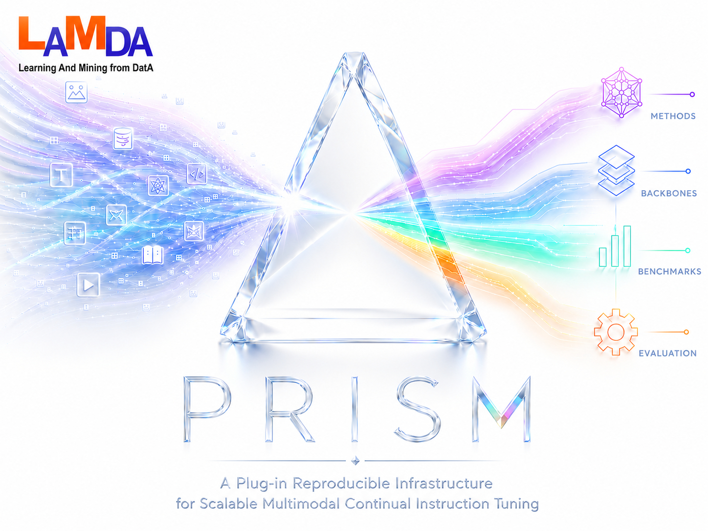

PRISM — A Plug-in Reproducible Infrastructure for Scalable Multimodal Continual Instruction Tuning
Introduction
Vision–language models are increasingly deployed in settings where new tasks, datasets, or instructions arrive over time. Retraining the full model for each arrival is costly and risks catastrophic forgetting of earlier capabilities.
PRISM targets continual instruction tuning on multimodal LLM backbones (currently LLaVA-1.5 and InternVL-Chat 1.0): you keep a frozen (or lightly tuned) multimodal backbone, add parameter-efficient adapters, and plug in continual-learning logic through a stable integration API.
Design goals
- Plug-in methods — Register a new CL algorithm without forking the trainer.
- Reproducibility — Pinned dependencies, centralized configs, logged DeepSpeed commands.
- Scalability — Multi-GPU training via DeepSpeed; per-rank model placement during load.
- Multimodal benchmarks — UCIT, CoIN, TriGap task schedules and eval hooks.
Relation to Hugging Face PEFT
The mental model matches the
PEFT quick tour:
configure adapters → wrap the base model → train a small footprint → save adapter_model.safetensors
→ load for inference. PRISM adds CLIntegration hooks (routing, replay, regularization, extra state)
and LLaVA-specific data/eval paths. The in-repo PEFT/ package is vendored with custom tuners;
do not replace it with upstream PyPI peft alone.
Architecture
The banner diagram refracts heterogeneous multimodal inputs into four pillars. Each pillar maps to directories you will touch when running or extending PRISM.
Four pillars
Methods
method/custom/<name>/integration.py implements CLIntegration. Custom tuners live in PEFT/tuners/custom/.
Backbones
backbone/llava/, backbone/internvl/, plus shared training in backbone/shared/train/. Select via --backbone or config/backbone/registry.py.
Benchmarks
config/benchmarks/ defines task order, JSON paths, and BENCHMARK_TASK_NUM.
Evaluation
backbone/shared/eval/ for inference; utils/eval_merge_jsonl.py for metric aggregation.
Training pipeline
config/paths/<backbone>_paths.py, benchmark paths, and config/run_config.py (backbone + precision)2.
python run.py train <task_ids> --benchmark … --backbone …3.
core.load_model_for_train → active MLLM + PEFT + CLModel4.
LLaVATrainer + CLTrainerCallback → checkpoints/5.
python run.py infer … → results/ → eval merge script
Repository map
| Path | Role |
|---|---|
run.py | Single CLI for train / infer orchestration. |
core/ | Load/save models, merge configs, device placement. |
method/factory.py | Registers and instantiates integrations. |
config/methods/ | Per-method hyperparameters and batch sizes. |
config/run_config.py | Default CLI flags for train and infer. |
Methods catalog
Select a continual-learning integration with --method <id>.
Each id maps to a folder under method/custom/.
Hyperparameters live in config/methods/<method>.py.
Quick tour
End-to-end workflow:
- Clone repo and run
bash scripts/setup_env.sh(default stack tested on RTX 5090). - Download weights (see Pre-trained weights) and edit
config/paths/llava_paths.pyorconfig/paths/internvl_paths.py. - Set
backbone,TRAIN_PRECISION, andINFER_PRECISIONinconfig/run_config.py(see Backbone and Precision). - Sanity check:
python run.py infer 0 --method zeroshot --backbone llava - Train sequential tasks:
python run.py train 0 1 2 … - Infer and evaluate:
python run.py infer …→utils/eval_merge_jsonl.py …
Pre-trained weights
Download checkpoints from each upstream Model Zoo, then point path configs at your local directories.
| Backbone | --backbone | Checkpoint name | Upstream |
|---|---|---|---|
| LLaVA-1.5 | llava |
llava-v1.5-7b |
haotian-liu/LLaVA |
| InternVL-Chat 1.0 | internvl |
InternVL-Chat-ViT-6B-Vicuna-7B |
internvl_chat_llava |
Use LLaVA-1.5 and InternVL-Chat 1.0 weights — not LLaVA-NeXT or InternVL2.
You can add more backbones under config/backbone/ and backbone/, then register them in
config/backbone/registry.py.
Backbone
PRISM resolves the active backbone from CLI --backbone, environment variable
PRISM_BACKBONE, or BACKBONE_DEFAULT / TRAIN_DEFAULTS["backbone"] in
config/run_config.py. Supported ids: llava, internvl.
Path configs
| Backbone | Path module | Constants module | Checkpoint suffix |
|---|---|---|---|
llava |
config/paths/llava_paths.py |
config/backbone/llava.py |
_llava |
internvl |
config/paths/internvl_paths.py |
config/backbone/internvl.py |
_internvl |
Each path module sets BASE_MODEL_PATH, vision / routing towers, checkpoint and result dirs, and DeepSpeed config.
InternVL adds LOAD_VISION_TOWER_SEPARATELY and EMBEDDED_VISION_IMAGE_SIZE — for zeroshot / eval,
keep the merged InternVL-Chat checkpoint (LOAD_VISION_TOWER_SEPARATELY = False).
CLI examples
# LLaVA backbone (default suffix _llava)
python run.py train 0 --backbone llava --benchmark ucit
# InternVL backbone (suffix _internvl — match INFER_DEFAULTS / --checkpoint-suffix)
python run.py infer 0 --backbone internvl --checkpoint-suffix _internvl --method zeroshot
# Override via env for a shell session
export PRISM_BACKBONE=internvlcheckpoints/ucit/<method>/Task2_llava/ or Task2_internvl/.
Set checkpoint_suffix in INFER_DEFAULTS to match the backbone you trained with.
Precision
Training and inference precision are configured separately in config/run_config.py.
CLI flags override the file defaults.
Training — TRAIN_PRECISION
| Value | Behavior |
|---|---|
bf16 | Full weights + bf16 mixed precision (highest VRAM). |
fp16 | Full weights + fp16 mixed precision. |
8bit | bitsandbytes 8-bit LLM + bf16 compute (lower VRAM). |
4bit | bitsandbytes 4-bit LLM + bf16 compute (lowest VRAM). |
# config/run_config.py
TRAIN_PRECISION = "bf16"
# CLI override
python run.py train 0 --train-precision 8bitInference — INFER_PRECISION
| Value | Behavior |
|---|---|
bf16 | Recommended default; bfloat16 weights. |
fp16 | Float16 weights. |
8bit / 4bit | Quantized LLM only; vision towers stay fp16/bf16. |
# config/run_config.py
INFER_PRECISION = "bf16"
# CLI overrides (take precedence over INFER_PRECISION)
python run.py infer 0 --load-8bit
python run.py infer 0 --load-4bitbf16 or 8bit for zeroshot and evaluation.
Installation
The default one-shot script is tested on RTX 5090 (CUDA 12.8+, torch 2.8 + cu128).
PRISM has also been run on RTX 3090, A100, RTX Pro 6000, and similar GPUs — adjust PyTorch,
flash-attn, and CUDA-related pins for your hardware (see requirements/README.md).
git clone <YOUR_REPO_URL> PRISM
cd PRISM
bash scripts/setup_env.shThis creates conda env prism, installs the default stack, flash-attn, and pip install -e ..
Manual / legacy stacks:
pip install -r requirements/torch.txt # 5090 default (cu128)
# pip install -r requirements/torch-cu118.txt # older CUDA / A100
pip install -r requirements.txt
pip install -e .Conda alternative:
conda env create -f environment.yml
conda activate prism
bash scripts/setup_env.shrequirements/README.md for pins and options
(TORCH_REQUIREMENTS, FLASH_ATTN_WHEEL, SKIP_FLASH_ATTN).
Verify install
python -c "import torch, transformers, deepspeed; print(torch.__version__)"
python -c "from core.load_model import _resolve_train_cuda_device; print('PRISM core OK')"Paths & data
Edit the path module for your active backbone before any run. Shared dirs
(CHECKPOINT_DIR, RESULT_DIR, …) live in config/paths/common.py.
LLaVA — config/paths/llava_paths.py
| Variable | Description |
|---|---|
BASE_MODEL_PATH | LLaVA-1.5 weight directory (llava-v1.5-7b). |
CLIP_PATH | CLIP checkpoint for vision / text routing towers. |
PRETRAIN_MM_PROJECTOR | Optional LLaVA-1.5 mm_projector pretrain weights. |
InternVL — config/paths/internvl_paths.py
| Variable | Description |
|---|---|
BASE_MODEL_PATH | InternVL-Chat merged checkpoint. |
CLIP_PATH | CLIP for dual-modal routing (same as CoIN / HiDe-style setups). |
VISION_TOWER_PATH | Standalone InternViT weights (when loading ViT separately). |
LOAD_VISION_TOWER_SEPARATELY | False for eval/zeroshot; True only when intentionally swapping ViT. |
Shared output dirs
| Variable | Description |
|---|---|
CHECKPOINT_DIR | Output for Task{N}_llava / Task{N}_internvl folders. |
RESULT_DIR | Inference JSONL tree. |
LOG_DIR | Text logs from run.py. |
DEEPSPEED_CONFIG | Usually config/deepspeed/zero2.json. |
Benchmarks layout
Each benchmark under config/benchmarks/ lists tasks with JSON annotation paths and image folders.
run.py passes --benchmark ucit|coin|trigap to set task schedules and data paths.
Register custom benchmarks in config/benchmarks/__init__.py.
For UCIT, --use-sub-dataset appends _sub to JSON filenames (see utils/sub_dataset.py).
# config/benchmarks/UCIT.py (layout example)
UCIT_ROOT = "/data/UCIT"
UCIT_INSTRUCTION_DIR = f"{UCIT_ROOT}/instructions"
UCIT_IMAGE_DIR = f"{UCIT_ROOT}/datasets"Training
Training is launched by run.py, which calls DeepSpeed on
backbone/shared/train/train_mem.py (FlashAttention path) or train.py.
CLI reference
python run.py train <task_id> [more_ids ...] \
--benchmark ucit \
--backbone llava \
--gpus 0,1,2,3 \
[--train-precision bf16|fp16|8bit|4bit] \
[--port 29602] \
[--debug] \
[--use-sub-dataset | --no-use-sub-dataset]Defaults come from config/run_config.py (TRAIN_DEFAULTS, TRAIN_EXTRA_ARGS).
What happens internally
load_config()merges CLI,config/methods/<method>.py, and benchmark task counts.load_model_for_trainbuilds the active MLLM backbone, wraps withCLModel, loads previous task weights if configured.LLaVATrainerruns the Hugging Face training loop with DeepSpeed; callbacks invokeCLIntegrationhooks.save_modelwrites PEFT adapters and callssave_extra_statewhen implemented.
cuda:{local_rank} before DeepSpeed init to avoid all ranks stacking on GPU 0 during load.
Checkpoints
Typical layout: checkpoints/<benchmark>/<method>/Task<k>_llava/ or
Task<k>_internvl/ containing adapter_config.json,
adapter_model.safetensors, and optional method-specific state files.
Inference
python run.py infer <task_id> \
--benchmark ucit \
--backbone llava \
--checkpoint-task 5 \
--checkpoint-suffix _llava \
--stage last \
--gpus 0,1 \
[--load-8bit | --load-4bit] \
--temperature 0
Inference spawns backbone/shared/eval/model_unified.py with backbone-aware loading via
core.load_model_for_inference. For zeroshot, use the base MLLM checkpoint only (no CL adapter).
Match --checkpoint-suffix to the backbone used during training (_llava vs _internvl).
Evaluation
After JSONL files are written under results/:
# Auto-find merge.jsonl under a result directory
python utils/eval_merge_jsonl.py /path/to/results/llava/ucit/ewc/Task5/last
# Explicit file + benchmark hint
python utils/eval_merge_jsonl.py merge.jsonl --benchmark ucit --task-id 5The script picks evaluators (VQA accuracy, caption metrics, etc.) from the benchmark and dataset name.
Reproduce experiments
- Lock environment — Use pinned
requirements/; record CUDA driver version. - Match assets — Same base weights, backbone (
--backbone), and benchmark layout as the reference run. - Align configs — Copy or diff
config/run_config.py(backbone,TRAIN_PRECISION,INFER_PRECISION). - Train in order — Incremental runs require prior task checkpoints with the correct suffix (
_llavaor_internvl). - Match infer flags —
--conv-mode,--temperature,--stage, chunk settings. - Compare logs — Under
output/; training logs echo the full DeepSpeed command.
python run.py train … --debug sets PYPRISM_LOG_LEVEL=DEBUG in the training subprocess.
Add a new method
Adding a method is similar to registering a new PEFT tuner plus trainer callbacks: implement hooks,
register the name, add config, then run run.py.
1. Integration class
Create method/custom/my_method/integration.py:
from method.base.integration import CLIntegration
from method.base.context import CLContext
from method.factory import CLMethodFactory
@CLMethodFactory.register("my_method")
class MyMethodIntegration(CLIntegration):
def initialize_model(self, model):
...
def on_input_prep(self, model, args, kwargs, context: CLContext):
...
def on_forward_start(self, model, context: CLContext):
...
def on_forward_end(self, model, outputs, context: CLContext):
return outputs
def on_task_end(self, model, context: CLContext, task_id: int):
...
def get_inference_config(self):
return {}Key optional overrides: save_extra_state, load_extra_state, prepare_training_data, compute_total_loss.
2. Method config
Add config/methods/my_method.py with:
METHOD_CONFIG— LoRA ranks,peft_target_modules, method-specific flags.TRAIN_BATCH_SIZES— nested dict benchmark → task index → batch size.INFER_DEFAULTS— optional defaults forrun.py infer.
# config/methods/ewc.py (excerpt — copy pattern for my_method)
METHOD_CONFIG = {
"lora_dropout": 0.05,
"peft_target_modules": "attn_and_ffn",
"ewc_lambda": 5000,
"ewc_fisher_batches": 50,
}
TRAIN_BATCH_SIZES = {
"ucit": {0: 8, 1: 8, 2: 8, 3: 8, 4: 8, 5: 4},
"coin": {0: 12, 1: 12, 2: 12, 3: 12, 4: 12, 5: 12, 6: 12, 7: 12},
}
INFER_DEFAULTS = {"batch_size": 12}
TRAIN_FLAG_OVERRIDES = {
"--learning_rate": "2e-4",
"--num_train_epochs": "1",
}3. Custom PEFT tuner (optional)
Add PEFT/tuners/custom/my_tuner.py, register in PEFT/mapping.py, and call
register_peft_extension from your integration (see method/custom/same/integration.py).
4. Run
python run.py train 0 --benchmark ucit --method my_method --gpus 0Vendored PEFT
PRISM includes a modified PEFT/ tree with custom tuners (same, hidellava,
smolora, disco, …). Training integrations call into this package for adapter injection
and checkpoint I/O.
peft without porting custom tuners will break training and checkpoint loading.
Configuration reference
PRISM separates global CLI defaults, per-method hyperparameters,
benchmark task tables, and filesystem paths. CLI flags always override
values in config/run_config.py; method files override training flags via TRAIN_FLAG_OVERRIDES.
| File | Contents |
|---|---|
config/run_config.py | TRAIN_DEFAULTS, INFER_DEFAULTS, TRAIN_PRECISION, INFER_PRECISION, BACKBONE_DEFAULT. |
config/backbone/*.py | Per-backbone constants (CHECKPOINT_SUFFIX, conv mode, routing dim). |
config/backbone/registry.py | Resolve --backbone, load path modules, precision helpers. |
config/paths/*_paths.py | Local weight and output directory paths per backbone. |
config/benchmarks/*.py | Task definitions and eval dataset names. |
config/deepspeed/*.json | ZeRO stage configuration. |
Global defaults — run_config.py
Edit once to change the default benchmark, method, or GPU list for every invocation:
# config/run_config.py
TRAIN_DEFAULTS = {
"benchmark": "ucit",
"backbone": "llava",
"gpus": "0,1,2,3",
"port": 29602,
"debug": False,
"use_sub_dataset": False,
}
TRAIN_PRECISION = "bf16" # bf16 | fp16 | 8bit | 4bit
INFER_PRECISION = "bf16" # bf16 | fp16 | 8bit | 4bit
BACKBONE_DEFAULT = "llava"
INFER_DEFAULTS = {
"benchmark": "ucit",
"backbone": "llava",
"checkpoint_task": "5",
"checkpoint_suffix": "_llava", # _internvl for InternVL runs
"stage": "last",
"gpus": "0",
"temperature": "0",
}
TRAIN_EXTRA_ARGS: list[str] = []Override on the command line without editing the file:
python run.py train 0 --benchmark coin --backbone internvl --train-precision 8bit --gpus 0,1
python run.py infer 0 --backbone internvl --checkpoint-suffix _internvl --load-8bitBackbone registry — config/backbone/registry.py
Resolution order: CLI --backbone → env PRISM_BACKBONE →
BACKBONE_DEFAULT / defaults in run_config.py.
To add a backbone, create config/backbone/<id>.py,
config/paths/<id>_paths.py, implement model code under backbone/<id>/,
and register the id in _SUPPORTED inside registry.py.
Path configs
LLaVA example (config/paths/llava_paths.py):
BASE_MODEL_PATH = "/path/to/llava-v1.5-7b"
CLIP_PATH = "/path/to/clip-vit-large-patch14-336"
CHECKPOINT_DIR = f"{PROJECT_ROOT}/checkpoints"
RESULT_DIR = f"{PROJECT_ROOT}/results"InternVL example (config/paths/internvl_paths.py):
BASE_MODEL_PATH = "/path/to/InternVL-Chat-ViT-6B-Vicuna-7B"
CLIP_PATH = "/path/to/clip-vit-large-patch14-336"
LOAD_VISION_TOWER_SEPARATELY = False # recommended for eval / zeroshot
Benchmark roots are set in config/benchmarks/<name>.py (e.g. UCIT_ROOT, COIN_ROOT).
Environment variables
| Variable | Purpose |
|---|---|
PRISM_BACKBONE | Default backbone id (llava, internvl) when CLI omits --backbone. |
PYPRISM_LOG_LEVEL | Logging level for training subprocess (DEBUG, INFO, …). Legacy: PYMCIT_LOG_LEVEL. |
CUDA_VISIBLE_DEVICES | Set by run.py from --gpus before spawning workers. |
export PRISM_BACKBONE=internvl
export PYPRISM_LOG_LEVEL=DEBUG
python run.py train 0 --benchmark ucit --gpus 0Troubleshooting
Out-of-memory during multi-GPU load
Ensure each rank loads onto its local device. PRISM resolves cuda:{local_rank} in
core/load_model.py before DeepSpeed initialization. If you still OOM, reduce
TRAIN_BATCH_SIZES for the task or use ZeRO-3 in config/deepspeed/.
Checkpoint not found at inference
# LLaVA checkpoint
checkpoints/ucit/<method>/Task2_llava/adapter_model.safetensors
# InternVL checkpoint
checkpoints/ucit/<method>/Task2_internvl/adapter_model.safetensors
python run.py infer 2 --benchmark ucit \
--backbone llava --checkpoint-task 2 --checkpoint-suffix _llava --stage lastCustom PEFT tuner not registered
Call register_peft_extension from your integration’s initialize_model
and verify the tuner name appears in PEFT/mapping.py.
Reproduce metrics mismatch
Match --conv-mode, --temperature, --stage (e.g. last vs best),
and the same --use-sub-dataset flag used during training.